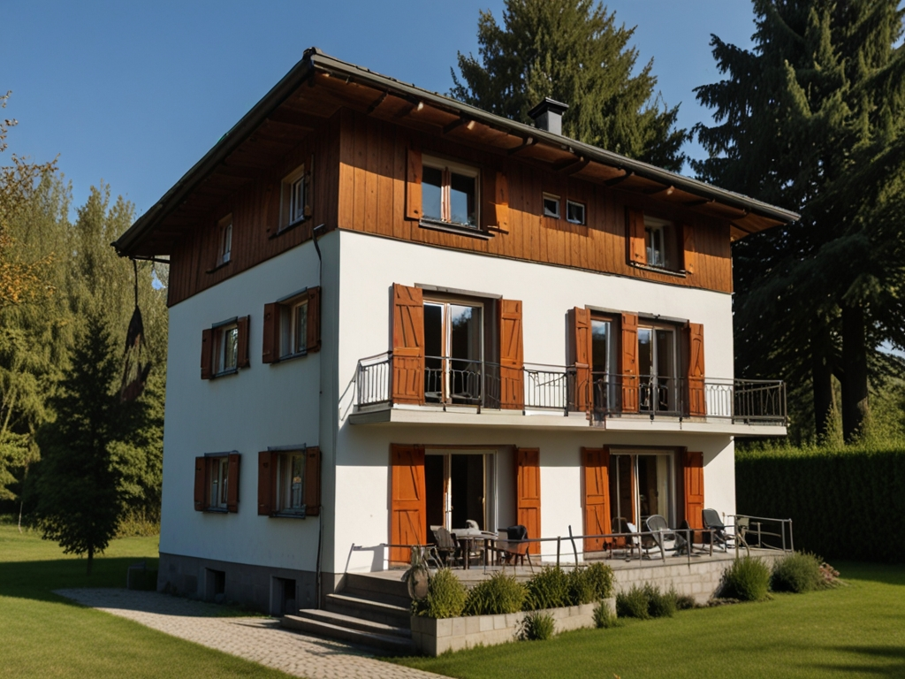

Deutsch Adjektive
الصفات الألمانية
الكلمات
Die Wörter
Groß
كبير
Klein
صغير
Schnell
سريع
Langsam
بطيء
Alt
قديم
الجمل
Die Sätze
Das Haus ist groß.

Das Haus ist groß.
المنزل كبير.
Der Hund ist klein.
Der Hund ist klein.
الكلب صغير.
Das Auto ist schnell.
Das Auto ist schnell.
السيارة سريعة.
Die Schildkröte ist langsam.
Die Schildkröte ist langsam.
Schildkröte
Die Schildkröte
السلحفاة بطيئة.
Das Buch ist alt.
Das Buch ist alt.
الكتاب قديم.